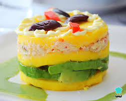

Causa Rellena

Description
La causa a la limeña, causa limeña o simplemente causa, es un entrante típico y muy extendido de la gastronomía del Perú que tiene origen precolombino.
En el antiguo Perú era preparada con papa amarilla, la cual tiene una textura suave, amasándola con ají triturado; aunque también se puede elaborar con cualquier otra variedad de papa.
Ingredients
- 1 large cooked chicken breast, diced or shredded
- ¼ cup green peas
- ¼ cup diced cooked carrot
- 1 teaspoon minced shallot
- 2 tablespoons finely chopped roasted red peppers
- 2 tablespoons chopped fresh cilantro
- 1 teaspoon lime juice
- ¼ cup mayonnaise, or as needed
Steps
- Combine chicken, green peas, carrot, shallot, roasted red peppers, cilantro, and lime juice in a bowl. Season with salt and cayenne. Add mayonnaise and mix until combined. Cover chicken salad with plastic wrap and refrigerate until ready to use.
- Place potatoes into a pot and cover with salted water; bring to a boil. Reduce heat to medium-low and simmer until very tender but not falling apart, about 20 minutes. Drain well and transfer potatoes to a mixing bowl. Mash until smooth.
- Add ají amarillo, olive oil, and lime juice to the potatoes. Season with cayenne and salt. Mash together with a potato masher. Switch to a spatula and mix until completely smooth.
- Line four 6-ounce ramekins with plastic wrap. Scoop mashed potatoes evenly into ramekins; press and smooth out the tops. Cover each with a layer of avocado slices. Fill each ramekin to the top with chicken salad, pressing it down and pulling up the plastic wrap to eliminate any air pockets. Cover with a final layer of mashed potatoes, going up to 1/2 inch or more over the rim.
- Seal top with a new layer of plastic wrap and fold the sides over to seal. Refrigerate salads until completely chilled, at least 1 hour.
- Mix mayonnaise, sour cream, garlic, and ají amarillo together for the sauce, adding a splash of water to adjust the thickness.
- Remove the top layer of plastic wrap from each salad. Invert each ramekin onto a serving plate; remove ramekins, then plastic wrap. Spoon some sauce around each salad.